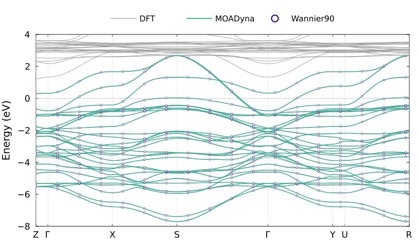
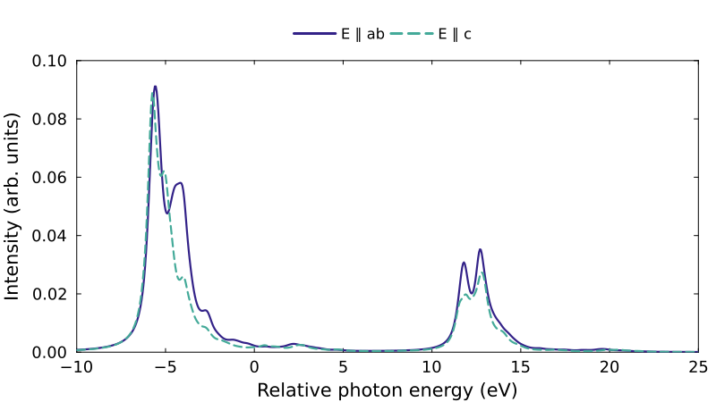

Interfacing with Wannier90
This tutorial shows how to import a Wannier90 Hamiltonian, inspect its hoppings, compare its bands with DFT, and construct an interacting cluster for spectroscopy. The worked example uses the tetragonal La₃Ni₂O₇ structure and DFT inputs associated with Chen et al., Nature Communications 15, 9597 (2024).
We construct two coupled Ni–O octahedra and calculate their Ni L-edge absorption. The hoppings and crystal-field splittings come directly from DFT. The interaction strengths and charge-transfer energy are separate model inputs. The same package functions can be used with other Wannier models; the material-specific orbital assignments and interaction choices are made explicitly below.
Input files and scripts
The inputs describe a 31-spatial-orbital Wannier model of tetragonal La₃Ni₂O₇: five d orbitals on each of two Ni atoms and three p orbitals on each of seven O atoms in the primitive cell. They contain the one-electron Hamiltonian and its crystal geometry. The Coulomb interactions, spin-orbit coupling, electron count, and charge-transfer energy are set later in this tutorial.
Download the example inputs (1.64 MiB) and unpack them:
tar -xzf la3ni2o7-wannier.tar.gzThe files below follow the calculation workflow: DFT inputs and results, then the Wannier interface and its results, followed by the files prepared for this tutorial.
DFT calculation (WIEN2k)
| File | Contents | Used for |
|---|---|---|
model.struct | Input: crystal structure, including the conventional-cell lattice parameters and atomic positions. | Converting the DFT k path to the primitive reciprocal coordinates used by the Wannier model. |
dft.klist_band | Input: exact band-path k points as rational coordinates in the conventional reciprocal cell, with symmetry-point labels. | Evaluating MOADyna bands at the same points as the DFT calculation. |
dft.spaghetti_ene | Output: DFT band energies and printed k coordinates for that path. | Overlaying the original DFT bands. |
Wannier construction (WIEN2Wannier and Wannier90)
| File | Contents | Used for |
|---|---|---|
model.inwf | WIEN2Wannier input: atomic projection definitions and their orbital order. | Establishing the orbital-to-atom assignment; the example writes this assignment explicitly in Julia. |
model.win | Wannier90 input: primitive lattice vectors, atomic positions, k mesh, and band-path endpoints and sampling settings. | Reading the geometry and interpolation settings; defining the stored Wannier band path. |
model_hr.dat | Wannier90 output: real-space hopping matrices between the 31 Wannier orbitals, indexed by lattice translation, with degeneracy weights. Energies are in eV. | Constructing the tight-binding Hamiltonian for both bands and clusters. |
model.wout | Wannier90 output from an earlier run: final Wannier centres and a run summary. | Identifying the integer cell images of the current centres, using the shared orbital ordering. |
model_centres.xyz | Wannier90 output: current Wannier centres wrapped into the home cell, in Cartesian coordinates. | Reading the current positions and unwrapping them with the cell images from model.wout. |
model_band.dat | Wannier90 output: interpolated band energies along the path defined in model.win. | Checking that MOADyna reproduces the stored Wannier bands. |
Two additional files describe and verify the archive:
| File | Contents | Used for |
|---|---|---|
README.md | Dataset provenance and coordinate conventions. | Understanding the input calculation. |
SHA256SUMS | Checksums of the data files. | Checking the downloaded files. |
For cluster construction and XAS, only model_hr.dat, model.win, and the two centre sources, model.wout and model_centres.xyz, are read. The band files and model.struct can be omitted. These same four files also suffice to calculate new tight-binding bands on a chosen k path. Add model_band.dat to compare against Wannier90, and dft.spaghetti_ene, dft.klist_band, and model.struct to reproduce the DFT overlay below. The data is distributed separately from the package source.
The complete scripts are in examples/la3ni2o7. From a MOADyna checkout, calculate XAS with:
julia --project=. --threads=8 examples/la3ni2o7/xas.jl la3ni2o7-wannier resultsThe two plotting scripts require Plots in the active environment. They can be run independently:
julia --project=. --threads=4 examples/la3ni2o7/bands.jl la3ni2o7-wannier results
julia --project=. examples/la3ni2o7/plot_xas.jl resultsbands.jl calculates and plots the band comparison. plot_xas.jl reads the saved XAS results without repeating the spectroscopy calculation. The shared model construction is in model.jl; its main steps are shown below.
The band calculation is small. The full interacting cluster has 658,008 ground-sector determinants and 548,340 core-excited determinants; allow several GB of memory for its sparse matrices and Krylov vectors.
Read the Wannier model and structure
For a complete Wannier90 calculation, call model = read_wannier90(seed). seed can be the seedname, the full Hamiltonian filename, or a directory containing one model. Keep the native companion files from the same run together under the same seedname:
| Input | Information used by the importer |
|---|---|
seed.win | Lattice, atom positions, k mesh, and declared interpolation settings. |
seed_hr.dat or seed_tb.dat | Real-space Hamiltonian. The combined _tb.dat format also supplies lattice vectors and Wannier centres. |
seed_wsvec.dat | Pair-dependent Wigner–Seitz translations, when written by Wannier90. |
seed.wout | Final Wannier centres and version information. |
seed_centres.xyz | Wannier centres, when their cell representatives are established by the companion input. |
The default interpolation=:auto uses the available source declarations. A bare _hr.dat does not identify its interpolation convention: use :plain for the ordinary degeneracy-weighted Fourier sum or :ws for centre-dependent Wigner–Seitz interpolation, according to the generating calculation. The reader needs _wsvec.dat, or enough geometry and mesh information to reconstruct its shifts, for the latter. The geometry is read from these native files. The atom-to-orbital assignment is supplied separately from the known orbital ordering, as shown explicitly below.
This archive contains current wrapped XYZ centres and a WOUT from an earlier run. Using their shared orbital ordering, we take the current positions from the XYZ file and recover their integer cell images from the earlier centres. First read the native geometry without reconstructing Wigner–Seitz shifts:
using MOADyna
using LinearAlgebra
using DelimitedFiles
datadir = "la3ni2o7-wannier"
seed = joinpath(datadir, "model")
geometry = read_wannier90(seed; interpolation=:plain)An XYZ file starts with two header lines. Its X rows are the Wannier centres, in orbital order; the other rows describe atoms. Read those positions, convert from Cartesian to fractional coordinates, and add the integer images:
xyz = readdlm(seed * "_centres.xyz"; skipstart=2)
cartesian = permutedims(Float64.(xyz[xyz[:, 1] .== "X", 2:4]))
wrapped = geometry.lattice \ cartesian
centres = wrapped + round.(Int, geometry.centres - wrapped)
model = read_wannier90(seed; centres, interpolation=:ws)centres has one fractional-coordinate column per Wannier orbital. interpolation=:ws reconstructs the centre-dependent Wigner–Seitz shifts from the lattice, k mesh, and Wannier centres. The returned model contains the effective hopping blocks ready for bands or cluster extraction:
modelTightBindingModel(31 orbitals, 565 translations, 3 dimensions)Inspect the dimensions and geometry:
A = model.lattice
atoms = model.metadata[:atoms].positions
size(model), size(atoms)((31, 31), (3, 12))round.(A; digits=4)3×3 Matrix{Float64}:
-1.912 1.912 1.912
1.912 -1.912 1.912
10.2015 10.2015 -10.2015The columns of A are the primitive lattice vectors in Å. The columns of atoms are Cartesian nuclear positions in Å. For example, the two Ni atoms are:
round.(atoms[:, 4:5]; digits=4)3×2 Matrix{Float64}:
0.0 0.0
0.0 0.0
12.1663 8.2367The structure and the WIEN2Wannier projection definitions give this assignment:
Atoms in model.win | Species | Wannier orbitals |
|---|---|---|
1:3 | La | None in this model |
4 | Ni A | 1:5 |
5 | Ni B | 6:10 |
6:12 | O | 11:31, three orbitals per atom |
There are twelve atoms in the primitive structure but only nine carry orbitals in this Wannier model. The importer preserves the input's numeric atom labels as strings; it does not infer the species or orbital character from them. For another dataset, establish this assignment from its projection definitions and the resulting Wannier orbitals before selecting a cluster. Then express it as one atom index per orbital in Julia. For the order listed above:
orbital_atoms = vcat(fill(4, 5), fill(5, 5), repeat(collect(6:12); inner=3))
orbital_atoms[4, 4, 4, 4, 4, 5, 5, 5, 5, 5, 6, 6, 6, 7, 7, 7,
8, 8, 8, 9, 9, 9, 10, 10, 10, 11, 11, 11, 12, 12, 12]The two fill calls assign five orbitals to each Ni; repeat assigns three orbitals to each oxygen. orbital_atoms[i] therefore names the atom of orbital i. Adapt these groups to your own orbital ordering. This assignment belongs to the model setup, and does not require a metadata file.
The archived WOUT used a different k mesh. Only its centre cell images enter the reconstruction above; the final import uses the current .win lattice and mesh and the current XYZ positions. The archive README records the checks on this reconstruction. With a matching final .wout or _tb.dat, read_wannier90(seed) reads the centres directly and this extra step is unnecessary.
The representatives must agree with the translation indices in the hopping table. Wannier centres can be displaced from nuclei; atomic positions select the fragment, while the orbital map and cell representatives identify its Hamiltonian entries.
In the example's model.jl, the reading lines above are wrapped in load_wannier(datadir), returning (model, orbital_atoms). load_wannier is a helper defined by this example; read_wannier90 is part of MOADyna. The code blocks on this page can be followed directly without loading that helper.
Inspect the hopping model
The returned TightBindingModel stores matrices with the convention
\[t_{ij}(R)=\langle 0,i|h|R,j\rangle.\]
R is an integer translation in the primitive lattice. The row orbital is in the reference cell and the column orbital is in cell R. Degeneracy weights and Wigner–Seitz shifts have already been incorporated by the reader. Obtain a whole block with hopping:
h0 = hopping(model, (0, 0, 0))
h_a = hopping(model, (1, 0, 0))
size(h0), size(h_a)((31, 31), (31, 31))For example, h0[1:5, 1:5] is the Ni A onsite d-shell matrix in the source orbital order, and h_a[1:5, 11:31] couples those orbitals to oxygen orbitals in the translated cell. The zero-translation block includes every hopping within the primitive cell, not just atomic onsite energies. Hermiticity relates opposite translations:
isapprox(hopping(model, (-1, 0, 0)), h_a')trueFor fractional reciprocal coordinates $\kappa$, the Bloch Hamiltonian is
\[h(\kappa)=\sum_R t(R)e^{2\pi i\kappa\cdot R}.\]
The package function bloch_hamiltonian evaluates this sum. At Γ:
h_Gamma = bloch_hamiltonian(model, [0.0, 0.0, 0.0])
energies_Gamma = eigvals(Hermitian(h_Gamma))
length(energies_Gamma)31These are energies in eV on the source energy reference. The importer preserves the file's orbital and spin content: this dataset has spatial orbitals, and we will add spin when constructing the interacting model. For spinor Wannier data, each imported orbital already represents a spinor and must not be doubled.
You can also construct a TightBindingModel directly from a dictionary of translation tuples and hopping matrices, supplying lattice vectors, centres, and labels as keywords. This provides the same band and cluster operations for Hamiltonians from other sources.
Compare the bands
First reproduce the stored Wannier interpolation:
wannier_path = read_wannier_path(seed; lattice=A)
reference = read_wannier_bands(seed; path=wannier_path)
calculated = bandstructure(model, wannier_path)
maximum(abs, calculated.energies - reference.energies)3.754095e-5These are all package functions: read_wannier_path reads the path defined in model.win, read_wannier_bands reads the stored energies, and bandstructure diagonalizes the imported tight-binding Hamiltonian on that path. Energies are stored as a bands-by-k-points matrix.
For other datasets, the path reader prefers _band.kpt and _band.labelinfo.dat when supplied. Otherwise it reconstructs the sampling from .win, as here. The reference-band reader checks point counts and path distances against the supplied path. A Wannier90 .eig file contains mesh-indexed eigenvalues and is not a band-path file.
To calculate a new path, supply vertices as fractional reciprocal-coordinate columns to kpath. For example, resample the symmetry points of the imported Wannier path with 100 intervals per segment:
vertex_indices = first.(wannier_path.labels)
vertices = wannier_path.points[:, vertex_indices]
new_path = kpath(model, vertices; intervals=100, labels=last.(wannier_path.labels))
new_bands = bandstructure(model, new_path)kpath uses the reciprocal metric of model.lattice to calculate distances. For disconnected path sections, pass their starting vertex indices in breaks.
The DFT calculation has a different sampling of the same path. To compare at the exact DFT points, read dft.klist_band and convert its rational coordinates from the conventional tetragonal reciprocal cell to Cartesian coordinates, then to the primitive reciprocal cell used by the Wannier Hamiltonian:
\[\mathbf k = B_{\mathrm{conv}}\mathbf q,\qquad \boldsymbol\kappa = A_{\mathrm{prim}}^T\mathbf k/(2\pi).\]
The following file handling is specific to this WIEN2k tetragonal input. model.struct stores lattice lengths in bohr; dft.klist_band stores three integer numerators and a common denominator in fixed-width fields:
cell = parse.(Float64, split(readlines(joinpath(datadir, "model.struct"))[4]))
@assert cell[1] == cell[2] && cell[4:6] == [90, 90, 90]
lengths = cell[1:3] .* MOADyna.Units.bohr_angstrom
reciprocal = 2π * Diagonal(1 ./ lengths)
coordinates = Vector{Float64}[]
labels = Pair{Int,String}[]
for line in eachline(joinpath(datadir, "dft.klist_band"))
startswith(strip(line), "END") && break
integers = [parse(Int, line[i:i+4]) for i in (11, 16, 21, 26)]
push!(coordinates, integers[1:3] ./ integers[4])
label = strip(line[1:10])
isempty(label) || push!(labels, length(coordinates) => (label == "G" ? "Γ" : label))
end
cartesian = reciprocal * reduce(hcat, coordinates)
points = A' * cartesian / (2π)
distance = vcat(0.0, cumsum(norm.(eachcol(diff(cartesian; dims=2)))))
path = KPath(points, distance; labels)KPath is the package's path representation. points contains fractional reciprocal coordinates, distance gives the accumulated Cartesian distance along the path, and labels marks its symmetry points. The example's dft_path(datadir, model) helper in bands.jl wraps the conversion above. For a new calculation with a path already expressed in the Wannier reciprocal cell, construct KPath directly or use kpath.
Read the DFT energies on this path and calculate the corresponding TB bands:
dft = read_wien2k_bands(joinpath(datadir, "dft.spaghetti_ene");
energy_unit=:eV, path, atol=2e-5)
computed = bandstructure(model, path)
size(computed.energies)(31, 201)read_wien2k_bands is a package reader for the dispersion file; it checks the supplied path against the printed path distances. The stored Wannier curves retain their own 1,546-point grid. All three datasets use the original energy zero; no alignment shift is fitted.
For a WIEN2k file with a matching .insp companion, the energy unit can be read from that companion; otherwise supply energy_unit explicitly as above. For VASP calculations processed with VASPKIT, read_vaspkit_bands reads BAND.dat or projected band files and the neighboring KLABELS. Both readers return BandStructure, so the plotting calls below are shared. Projection columns are available through metadata[:columns] for VASPKIT; WIEN2k source band indices and printed k coordinates are retained in metadata.
An imported band file containing only path distances can be plotted immediately, but evaluating a new Hamiltonian on its grid also needs the k coordinates. When the source calculations use different energy references, energy_zero in plot or plot! subtracts the supplied value from the displayed energies. Choose that value from the calculation's known reference, such as its Fermi energy, before comparing the curves.
BandStructure has a Plots recipe, so the datasets can be overlaid directly. Use sparse markers for the stored Wannier bands so that the coincident curves remain distinguishable:
using Plots
ticks = (path.distance[first.(path.labels)], last.(path.labels))
p = plot(; size=(850, 500), framestyle=:box, tick_direction=:in,
guidefontsize=14, tickfontsize=12, legendfontsize=11,
legend=:outertop, legend_columns=3, foreground_color_legend=:transparent,
margin=3Plots.mm, grid=false, widen=false)
vline!(p, ticks[1]; label="", color=:gray85, linewidth=0.6)
hline!(p, [0]; label="", color=:gray70, linewidth=0.7)
plot!(p, dft; label="DFT", color="#999999", linewidth=0.9)
plot!(p, computed; label="MOADyna", color="#44AA99", linewidth=1.5)
sampled = 1:90:length(reference.path.distance)
markers = BandStructure(KPath(nothing, reference.path.distance[sampled]),
reference.energies[:, sampled])
plot!(p, markers; label="Wannier90", seriestype=:scatter, markershape=:circle,
markersize=2.1, markercolor=:white, markerstrokecolor="#332288",
markerstrokewidth=0.7)
plot!(p; xlabel="", ylabel="Energy (eV)", xticks=ticks,
xlims=(first(path.distance), last(path.distance)), ylims=(-8, 4), yticks=-8:2:4)
savefig(p, "bands.pdf")
Download the band figure (PDF).
The near-coincident teal curves and open reference markers check the Wannier import. Markers display a subset of the stored Wannier points; the numerical comparison above uses all of them. Comparing with the grey DFT curves tests the chosen Wannier subspace and interpolation. DFT bands outside that subspace remain visible.
Retain periodic connections in a supercell
If the next calculation needs complete cells and the hoppings between them, use supercell to regroup the periodic model. For example, doubling the first primitive lattice vector groups two complete 31-orbital cells:
grouped = supercell(model, Diagonal([2, 1, 1]))
internal = hopping(grouped, (0, 0, 0))
connection = hopping(grouped, (1, 0, 0))
size(grouped), size(internal)((62, 62), (62, 62))grouped.lattice contains the new lattice vectors, and grouped.metadata[:orbital_map] maps its orbitals to parent (cell, orbital) pairs. The zero-translation block contains the internal Hamiltonian; nonzero blocks retain connections to neighboring supercells. Their Bloch sum gives the periodic model in the reduced Brillouin zone.
For an open fragment consisting of complete cells, finite_cluster(model; cells=[(0, 0, 0), (1, 0, 0)]) directly extracts the corresponding finite matrix. The following spectroscopy model instead uses an atom-centred fragment: the two Ni octahedra include oxygen images from several primitive cells.
Select two octahedra
We want an open fragment containing the two Ni sites in adjacent layers and their coordinating oxygen atoms. The octahedra share one apical oxygen, so that oxygen must appear only once. The package function cluster_sites selects periodic site images within a radius of specified central sites:
nickel_atoms = [4, 5]
oxygen_atoms = 6:12
sites = cluster_sites(A, atoms; centres=nickel_atoms,
neighbors=oxygen_atoms, radius=2.5)
length(sites)13Each entry is (cell, atom), with an integer cell translation and an atom index from atoms. The two centres come first, followed by eleven distinct oxygen images. centres=[4, 5] selects the two reference-cell Ni atoms; an explicit entry such as ((1, 0, 0), 4) would select a translated Ni instead. neighbors specifies which atom indices in the reference cell may contribute periodic images. Increasing radius includes more oxygen atoms while keeping the same two Ni centres. A single-octahedron example would use centres=[4].
The selected atoms must now be translated into Wannier-orbital indices. An orbital and its assigned nucleus can use different cell representatives in the source files. For this localized dataset, obtain the needed integer shifts from their coordinate differences and check the resulting distances:
wannier_positions = A * model.centres
orbital_images = [Tuple(round.(Int,
A \ (atoms[:, orbital_atoms[i]] - wannier_positions[:, i])))
for i in eachindex(orbital_atoms)]
offsets = [norm(wannier_positions[:, i] + A*collect(orbital_images[i]) -
atoms[:, orbital_atoms[i]]) for i in eachindex(orbital_atoms)]
maximum(offsets)0.14593387509665057The shifted Wannier centres are all within 0.146 Å of their assigned atoms. The following check certifies that these are unique closest images: the smallest singular value of A bounds the length of every nonzero lattice translation from below.
@assert maximum(offsets) < minimum(svdvals(A))/2The shifts are a coordinate correspondence, not an assignment of orbital character. For another dataset, supply its known correspondence or validate the derived shifts as above; componentwise rounding alone is insufficient in a general nonorthogonal cell.
If atom s is selected in cell R, its orbital i belongs to cell R + orbital_images[i]. Expand this mapping explicitly, then use the package function finite_cluster to extract the Hamiltonian:
selection = [(cell .+ orbital_images[i], i) for (cell, atom) in sites
for i in findall(==(atom), orbital_atoms)]
cluster = finite_cluster(model, selection)
size(cluster.hamiltonian)(43, 43)The first ten orbitals are the two Ni d shells; the remaining 33 are O p orbitals. All hoppings between the selected orbitals are retained. Connections to omitted orbitals are removed at the open boundary. Nuclear positions for the fragment can be collected separately:
positions = reduce(hcat, [atoms[:, atom] + A*collect(cell) for (cell, atom) in sites])The example wraps these steps in bilayer_cluster(model, orbital_atoms; radius=2.5) in model.jl, returning (cluster, positions). That helper supplies this material's Ni and O indices and combines cluster_sites with finite_cluster; both package functions can be used for other structures with different centres and orbital assignments.
Construct the ligand orbitals
Write the finite Hamiltonian as
\[h=\begin{pmatrix}h_d&C^\dagger\\C&h_O\end{pmatrix}.\]
The columns of $C$ describe which oxygen combinations couple directly to each Ni d orbital. This $33\times10$ matrix has rank ten, so its range supplies ten spatial ligand orbitals. Both Ni shells must be treated together because they share oxygen states:
rotation = ligand_basis(cluster, 1:10)
rotation.direct, rotation.tail(11:20, 21:43)The returned rotation.U changes from the original orbital basis to the new one, and rotation.hamiltonian is rotation.U' * cluster.hamiltonian * rotation.U. The two coupling norms help distinguish the exact rotation from a later truncation:
rotation.coupling_residual # d-to-tail coupling, near numerical zero
rotation.tail_coupling # ligand-to-tail coupling, about 1.51 eVFor full column rank, ligand_basis uses the polar factor $Q=C(C^\dagger C)^{-1/2}$. Its columns follow the ordered d orbitals and the direct coupling $Q^\dagger C$ is Hermitian positive definite. The Ni orbitals remain unchanged. The full returned transformation is unitary and retains every oxygen orbital.
For the interacting model, keep the two d shells and these ten direct ligands. The source Ni orbitals are ordered as $(xy,xz,yz,x^2-y^2,z^2)$; MOADyna's real d harmonics use $(xy,yz,z^2,xz,x^2-y^2)$. The ligand columns follow the Ni orbitals, so apply the same permutation to all four five-orbital groups:
@assert length(rotation.direct) == 10
cubic_order = [1, 3, 5, 2, 4]
keep = vcat([cubic_order .+ offset for offset in (0, 5, 10, 15)]...)
h = rotation.hamiltonian[keep, keep]
size(h)(20, 20)This last projection discards 23 oxygen combinations. They have no direct d coupling, but they still couple to the retained ligands. Removing them is a model approximation, and the coupling above is not negligible by construction. A larger oxygen neighbourhood or additional ligand levels can be used to investigate its effect.
The ideal dimer has D₄h symmetry about the shared oxygen; an individual Ni site has C₄v symmetry. The retained Hamiltonian respects the dimer symmetry to numerical precision. The site-labelled ligand orbitals can be combined into even and odd dimer combinations when a parity basis is useful.
These calls to the package function ligand_basis, followed by the explicit selection and permutation, form the example helper reduced_cluster(cluster) in model.jl. It returns (h, rotation). For a different orbital order or a rank-deficient coupling matrix, choose the retained indices and their shell interpretation accordingly.
Add interactions and set the charge-transfer energy
At this point h contains twenty spatial orbitals: five Ni A d, five Ni B d, five ligand A, and five ligand B. We now use MOADyna's shell and operator functions to build a many-body Hamiltonian. Define the shells and the separate interaction parameters first:
m = ShellModel([:Ni_2p, :NiA_3d, :NiB_3d, :LA_3d, :LB_3d])
shells = (:NiA_3d, :NiB_3d, :LA_3d, :LB_3d)
Udd = 6.0
Upd = 7.5
Delta = 0.5
slater_scale = 0.8ShellModel supplies ten spin orbitals for each d-like shell and six for the Ni A 2p core. The ligand shells use d-like labels because they transform like the corresponding Ni d orbitals; they remain noninteracting. We include one core shell because the absorption will be calculated at Ni A.
We preserve the DFT hopping matrices and each shell's traceless onsite matrix. The average d and ligand energies are replaced by $\epsilon_d$ and $\epsilon_L$ to impose
\[\Delta = E(d^8d^8\underline L)-E(d^7d^8) = \epsilon_d-\epsilon_L+7U_{dd}.\]
The two filled ligand shells contain 20 electrons in total. Choosing the $d^7d^8L^{20}$ configuration centroid as zero also gives $15\epsilon_d+20\epsilon_L+49U_{dd}=0$. These equations define the shell means without altering the DFT crystal-field splittings. Configuration centroids refer to the monopole energies, rather than individual multiplet levels.
Solve the two equations for the shell means, then shift the diagonal of each five-orbital block by a constant:
ed = (20Delta - 7*27Udd) / 35
eL = (-15Delta + 7*8Udd) / 35
cubic = copy(h)
for (indices, mean_energy) in zip((1:5, 6:10, 11:15, 16:20), (ed, ed, eL, eL))
shift = mean_energy - real(tr(cubic[indices, indices]))/5
for i in indices
cubic[i, i] += shift
end
end
ed, eL(-32.114285714285714, 9.385714285714286)The large individual values reflect the chosen configuration-energy zero. The physical charge-transfer cost is the combination specified above.
Next add spin with kron(cubic, I₂) and transform each shell from real to spherical harmonics. The package function to_real supplies the transformation whose columns are the real orbitals in the spherical basis:
transform = zeros(ComplexF64, 40, 40)
for (i, shell) in enumerate(shells)
indices = 10i-9:10i
transform[indices, indices] = to_real(m, shell)
end
spherical = transform * kron(cubic, Matrix{Float64}(I, 2, 2)) * transform'
tolerance = size(spherical, 1) * eps(Float64) * opnorm(spherical, Inf)
@assert norm(spherical-spherical', Inf) <= tolerance
spherical = (spherical+spherical')/2
spherical[abs.(spherical) .< tolerance] .= 0The last lines remove rounding noise from the unitary transformations. This keeps the sparsity associated with the exact orbital symmetries. The matrix now has the same basis as the atomic Coulomb, spin-orbit, and dipole operators.
Use onebody to turn the matrix into a second-quantized operator, with the matrix rows and columns assigned to an explicit ordered list of modes. Then add Slater interactions and 3d spin-orbit coupling on each Ni:
modes = [(site_of(m, shell), i) for shell in shells for i in 1:10]
Fdd = slater_scale .* (12.233, 7.597)
H_atomic = sum(coulomb(m, shell; U=Udd, F=Fdd) + 0.083LS(m, shell)
for shell in (:NiA_3d, :NiB_3d))
H_gs = onebody(spherical, modes) + H_atomicThe higher Slater integrals are scaled to 80% of the atomic values used in the paper. The 3d and 2p spin-orbit strengths are 0.083 and 11.507 eV. Assigning atomic interactions to Ni-centred Wannier orbitals is the effective-shell approximation used here.
For absorption on Ni A, an explicit 2p core hole changes the Hamiltonian by
\[H_{\mathrm{XAS}}=H_{\mathrm{GS}}+H_{pd} -6U_{pd}N_{d,A}+\zeta_{2p}\mathbf l\cdot\mathbf s+C_0.\]
The subtraction removes the filled-core contribution already included in the ground-state levels; the spectator Ni keeps its original levels. The full $H_{pd}$ retains the core-valence multiplets. With $C_0=-\epsilon_d-7U_{dd}+8U_{pd}$, the reference $p^6d^7d^8L^{20}\to p^5d^8d^8L^{20}$ centroid transition is at zero. The plotted energy is relative to this reference; an absolute edge position is not determined by this model.
Build that core-excited Hamiltonian and its absorption dipole explicitly:
core_reference = -ed - 7Udd + 8Upd
H_xas = H_gs + coulomb(m, :Ni_2p, :NiA_3d; U=Upd,
F=(slater_scale*7.720,), G=slater_scale .* (5.783, 3.290)) -
6Upd*n(m, :NiA_3d) + 11.507LS(m, :Ni_2p) + core_reference
T = dipole(m, :Ni_2p => :NiA_3d)The example helper interacting_cluster(h; Udd, Upd, Delta, slater_scale) groups the level shifts and operator construction above. It returns the shell model, both Hamiltonians, the dipole, and the electron-count restrictions used below. The helper lives in model.jl; ShellModel, to_real, onebody, coulomb, LS, n, and dipole are package functions.
Calculate absorption
There are 35 valence electrons initially and 36 after absorption. The example keeps every determinant in those sectors:
ground = [nshells(m, :Ni_2p) == 6, total(m) == 41]
excited = [nshells(m, :Ni_2p) == 5, total(m) == 41]The total count includes the core: six core plus 35 valence electrons initially, and five core plus 36 valence electrons after absorption. Solve the ground sector, requesting four states so that both the ground pair and the next pair are available:
states = eigen(H_gs, m; restrictions=ground,
n=4, tol=1e-8, krylovdim=60)
@assert states.values[2] - states.values[1] < 1e-7
@assert states.values[3] - states.values[1] > 1e-6
round.(states.values; digits=6)4-element Vector{Float64}:
-10.808483
-10.808483
-10.806290
-10.806290Calculate the absorption tensor on the relative photon-energy grid:
omega = range(-15, 35; length=1001)
spec = xas(H_xas, T, states;
restrictions=excited, temperature=0.0, degen_tol=1e-7,
omega_grid=omega, Gamma=0.6, krylovdim=600, reorth=:none)
size(spec.tensor)(3, 3, 1001)The lowest Kramers pair is averaged at zero temperature. The next pair checks that the ground manifold is complete. Gamma is a Lorentzian full width at half maximum in eV. The calculation returns the full Cartesian absorption tensor, so choosing another polarization does not require another solve:
in_plane = (polarise(spec, [1, 0, 0]) + polarise(spec, [0, 1, 0])) / (2π)
out_of_plane = polarise(spec, [0, 0, 1]) / πThese are intensity vectors on omega. Plot them with the same conventions used for the band figure:
using Plots
p_xas = plot(omega, in_plane; label="E ∥ ab", color="#332288", linewidth=2.2,
xlabel="Relative photon energy (eV)", ylabel="Intensity (arb. units)",
size=(800, 450), guidefontsize=14, tickfontsize=12, legendfontsize=11,
legend=:outertop, legend_columns=2, foreground_color_legend=:transparent,
framestyle=:box, tick_direction=:in, grid=false, margin=3Plots.mm,
widen=false, xlims=(-10, 25), xticks=-10:5:25,
ylims=(0, 0.10), yticks=0:0.02:0.10)
plot!(p_xas, omega, out_of_plane; label="E ∥ c", color="#44AA99",
linewidth=2.2, linestyle=:dash)
savefig(p_xas, "xas.pdf")The script xas.jl saves the tensor with save_spectra and writes the three Cartesian intensities to xas.txt. The separate plot_xas.jl example reads that text file and applies the plotting commands above.

Download the absorption figure (PDF).
The curves show absorption at one Ni site. The inversion-related second site has the same linear-polarization spectrum; summing both sites doubles the intensity. The example uses raw DFT hopping parameters, so this is an illustrative cluster calculation rather than the fitted spectrum in the paper.
RIXS uses the same Hamiltonians, ground states and dipoles. For example, a single incident energy near the main L₃ peak can be calculated with:
loss = rixs(H_gs, H_xas, T, T, states;
restrictions_final=ground,
restrictions_intermediate=excited,
omega_in_grid=range(-5.6; step=1.0, length=1),
omega_out_grid=range(0, 8; length=401),
Gamma_intermediate=0.6, Gamma_final=0.1, krylovdim=600, reorth=:none,
temperature=0.0, degen_tol=1e-7)Both transition arguments use the absorption orientation; rixs applies the outgoing adjoint internally. See NiO: XAS, RIXS, and nIXS for polarization contractions and plotting. This longer calculation is not run by xas.jl. Its final-state linewidth requires a separate Krylov-convergence check.